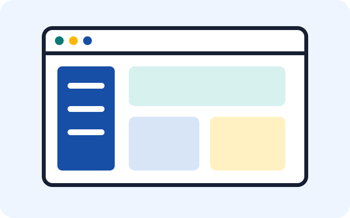
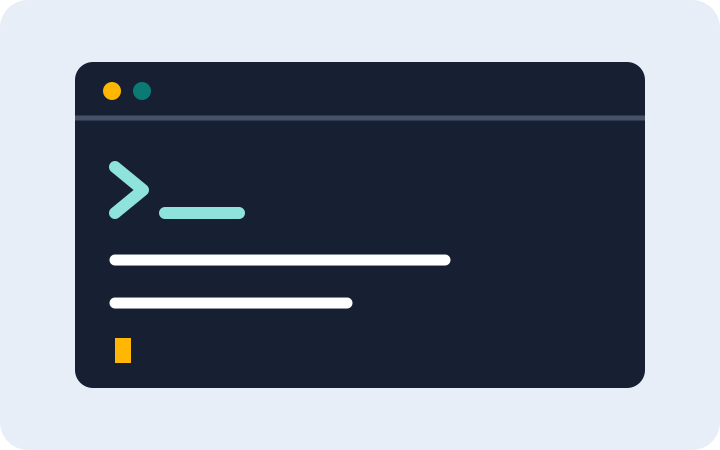
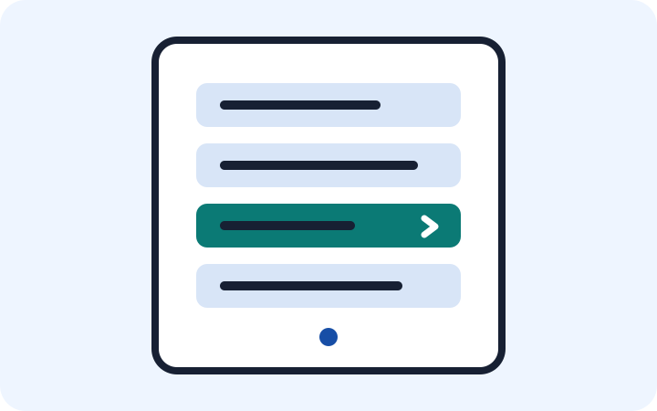
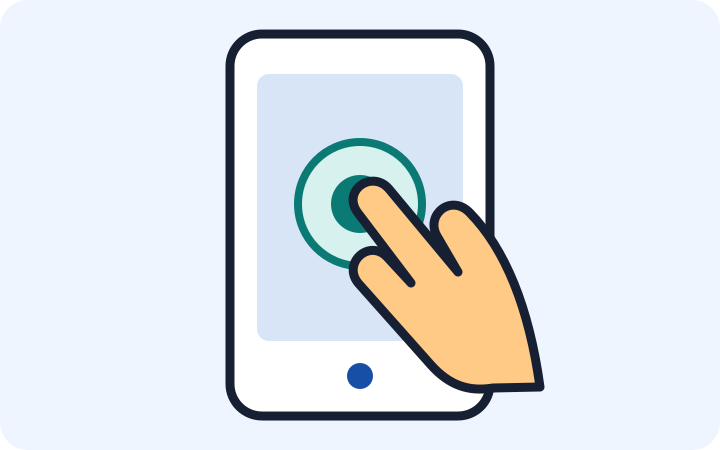
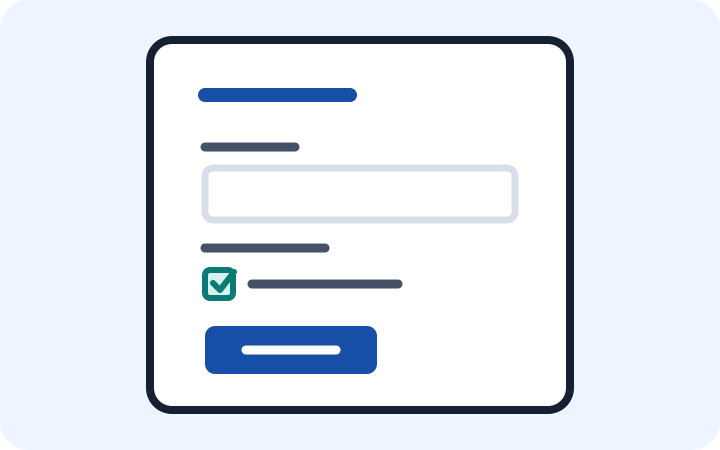

Acessibilidade
Estrutura semântica, contraste, foco visível, textos alternativos e operação por teclado seguem princípios da WCAG 2.1.
Instituto Federal de Educação, Ciência e Tecnologia de Roraima — IFRR
Trabalho acadêmico
Uma análise das diferentes formas de interação entre pessoas e sistemas computacionais.
Israel Moreno e Andreia de Souza
Introdução
Uma interface de usuário é o meio pelo qual uma pessoa interage com um sistema, dispositivo ou aplicação. Ela apresenta informações e permite que ações sejam realizadas.
As interfaces podem usar elementos visuais, comandos, menus, toques, voz, formulários ou linguagem cotidiana. Cada abordagem atende a contextos e necessidades diferentes.
Sete abordagens
Selecione um tema para consultar definição, funcionamento, exemplos, benefícios, limitações e cuidados de acessibilidade.

Organiza a interação por janelas, ícones, botões e menus visuais.
Conhecer interface
Controla o sistema por instruções textuais digitadas em um terminal.
Conhecer interface
Apresenta funções em listas e categorias para orientar cada escolha.
Conhecer interface
Permite interação direta com a tela por meio de toques e gestos.
Conhecer interfaceRecebe solicitações faladas e responde por áudio, texto ou ações.
Conhecer interface
Coleta dados estruturados por campos, seletores e controles de envio.
Conhecer interfaceInterpreta frases próximas da comunicação humana, escritas ou faladas.
Conhecer interfaceCritérios do projeto
Estrutura semântica, contraste, foco visível, textos alternativos e operação por teclado seguem princípios da WCAG 2.1.
O conteúdo se adapta a celulares, tablets e computadores sem esconder informações essenciais ou gerar rolagem horizontal.
A organização, compatibilidade, desempenho e facilidade de manutenção refletem critérios da ISO/IEC 25010.